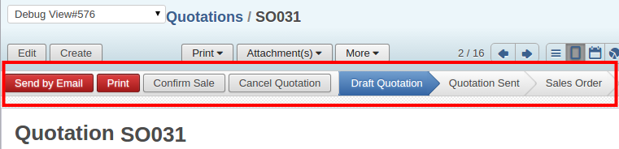

<section class="oe_container">
    <div class="oe_row oe_spaced">
        <h2 class="oe_slogan">Freeze Header for status Bar</h2>
        <h3 class="oe_slogan">Beautiful and Easy on the view where you want to freeze Status bar</h3>
        <div class="oe_span6">
            <div class="oe_demo oe_picture oe_screenshot">
                <a href="https://www.openerp.com/saas_master/demo?lang=en_US&module=account">
                    
                </a>
            </div>
        </div>
        <div class="oe_span6">
            <p class='oe_mt32'>
This is a good feature to have were we want to freeze the status bar while scrolling the form view.</p>
            
        </div>
    </div>
</section>

